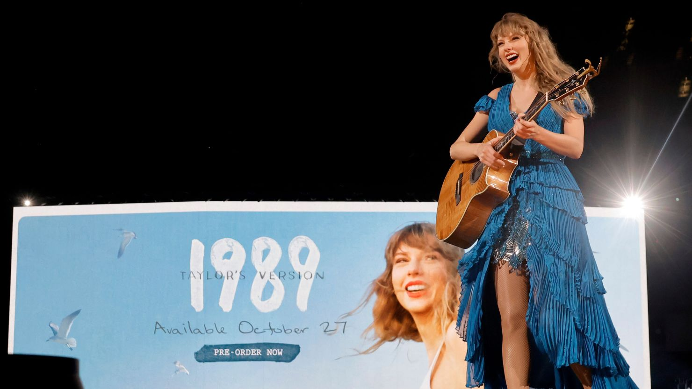
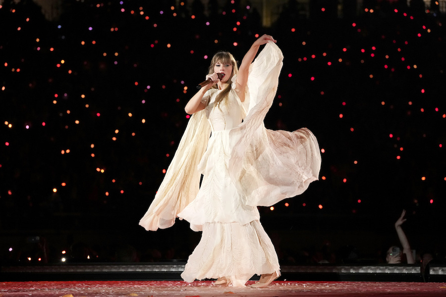

1989
1989 é o quinto álbum de estúdio da cantora e escritora Taylor Swift. Foi lançado no dia 27 de outubro de 2014, pela Big Machine Records. Título insipirado no ano de nascimento da artista e pela cena musical da década.
Folklore
Folklore é o oitavo álbum de estúdio da artista estadunidense Taylor Swift. Foi lançado no dia 24 de julho de 2020, pela Republic Records. A artista idealizou Folklore como "uma coleção de canções e histórias que fluíam como um fluxo de consciência de sua imaginação".
Midnights
Midnights é o décimo álbum de estúdio da cantora e escritora Taylor Swift. Foi lançado no dia 21 de outubro de 2022, pela Republic Records. Midnights explora reflexões noturnas inspirada pelas "noites de insônia" de Swift e aborda temas como ansiedade, insegurança, autocrítica, autoconsciência, insônia e autoconfiança
Referências: Daltonismo - Dráuzio Varella